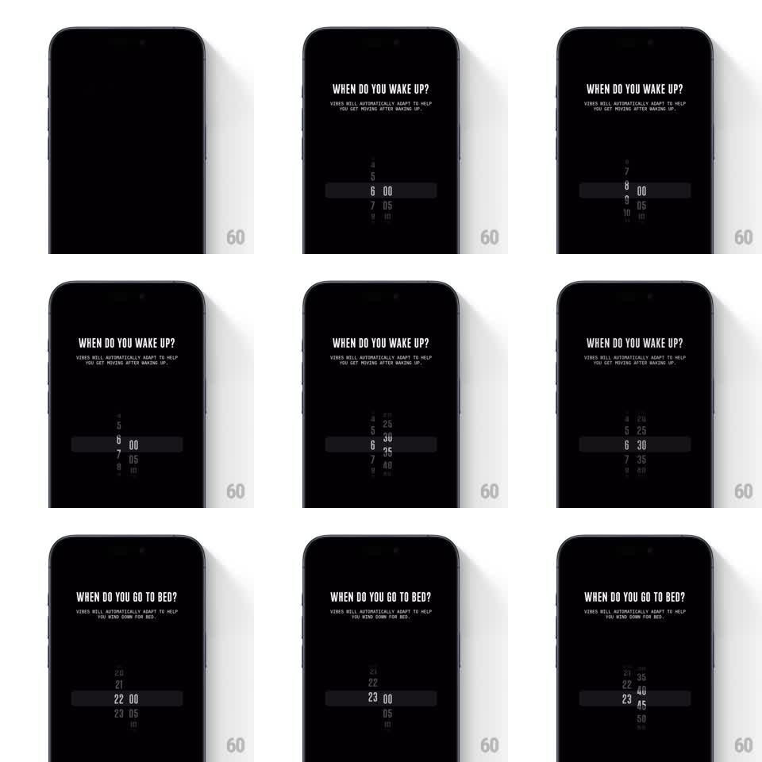

Media
Frame-by-frame

Rebuild this interaction 1:1: Not Boring Vibes' wake/bed time picker - a black screen asking "WHEN DO YOU WAKE UP?" with two physics-based drum wheels (hours and minutes) that snap with spring physics, then repeat for "WHEN DO YOU GO TO BED?".

Rebuild this interaction 1:1: Not Boring Vibes' wake/bed time picker - a black screen asking "WHEN DO YOU WAKE UP?" with two physics-based drum wheels (hours and minutes) that snap with spring physics, then repeat for "WHEN DO YOU GO TO BED?".
## Integration
Integration: stack-agnostic spec - springs given as stiffness/damping, timed motions as duration + curve; map every value to your framework and animation library of choice.
## Scene
Black screen. Condensed white title ("WHEN DO YOU WAKE UP?") with a small two-line explainer. Center: a horizontal selection band (dark rounded bar) crossing two vertical drum wheels - hours on the left, minutes (00, 05, 10...) on the right. Settled values sit large and white inside the band; neighbors shrink and dim above and below.
## Motion spec
Pattern: dual drum wheels with inertial scroll and spring snap.
- Each wheel drags 1:1 vertically with the finger, values rolling through the band; on release the wheel carries inertia and decelerates.
- Snap: the nearest value locks into the band with a spring (stiffness ~500, damping ~30) - a fast, slightly bouncy settle with a tick feel per detent.
- The selected hour and minute scale up and brighten (150ms); outgoing values shrink and fade to ~35%.
- The two wheels move independently but share the band, which subtly highlights on any snap.
- Title transition between WAKE UP and GO TO BED: the question crossfades (300ms) while the wheels hold their positions and re-derives defaults.
## Calibration
- Minute wheel steps in 5s - the coarse detents are intentional and part of the snap feel.
- Snap should be quick enough that a flick settles in under half a second.
## Reduced motion
Wheels scroll without inertia; values snap without spring overshoot.
## Don't miss
- Only the band row is fully lit - the tunnel of dimmed numbers above and below gives the drum its depth.
- The band is a single continuous rounded bar spanning both wheels, not two separate highlights.